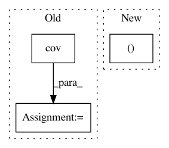

403b8569ce3c27485252db5ed102bc346c467be9,PyMC2/tests/test_norm_approx.py,test_norm_approx,check_draws,#test_norm_approx#,35
Before Change
draws.append(hstack((N.A.value, N.B.value)))
draws = array(draws)
empirical_cov = cov(draws.T)
empirical_mean = mean(draws,axis=0)
assert((abs(empirical_mean)<.25).all())
assert((abs(empirical_cov - N._C)<.25).all())
After Change
N.draw()
draws.append(hstack((N.alpha.value, N.beta.value)))
draws = array(draws)
plot(draws[:,0],draws[:,1],"k.")
xlabel(r"$\alpha$")
ylabel(r"$\beta$")
In pattern: SUPERPATTERN
Frequency: 3
Non-data size: 3
Instances
Project Name: pymc-devs/pymc3
Commit Name: 403b8569ce3c27485252db5ed102bc346c467be9
Time: 2007-09-13
Author: anand.prabhakar.patil@15d7aa0b-6f1a-0410-991a-d59f85d14984
File Name: PyMC2/tests/test_norm_approx.py
Class Name: test_norm_approx
Method Name: check_draws
Project Name: metric-learn/metric-learn
Commit Name: 130cbadff294b686e466d430f26b2d069f6bbf59
Time: 2019-06-07
Author: 31916524+wdevazelhes@users.noreply.github.com
File Name: metric_learn/sdml.py
Class Name: _BaseSDML
Method Name: _fit
Project Name: metric-learn/metric-learn
Commit Name: 130cbadff294b686e466d430f26b2d069f6bbf59
Time: 2019-06-07
Author: 31916524+wdevazelhes@users.noreply.github.com
File Name: metric_learn/lsml.py
Class Name: _BaseLSML
Method Name: _fit